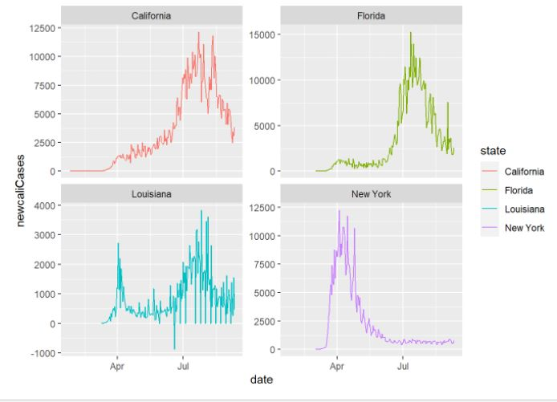
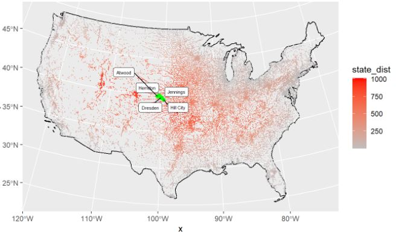
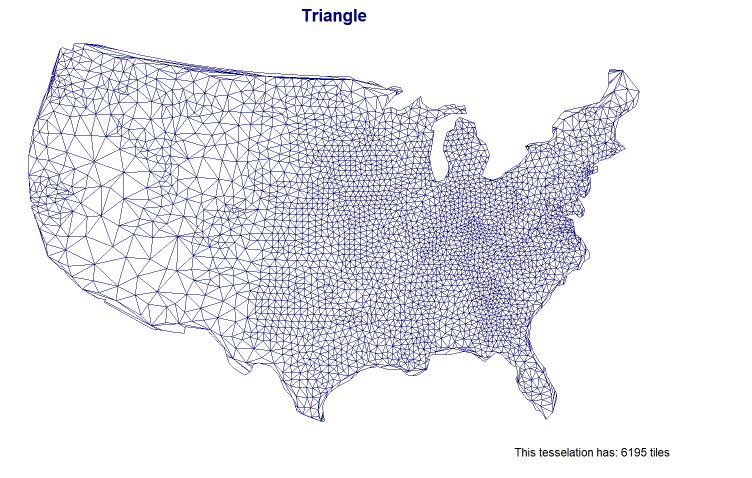
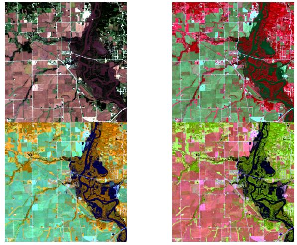

UCSB Research Projects
Lab 2 - Data Wrangling
- In this lab we learned to filter/wrangle through large data sets, in this case a New York times COVID-19 dataset. - Learned to mutate and use dply verbs to create rolling means, averages, daily new cases, etc. - Learned to use Knitr in order to create tables that display our filtered data.

Lab 3 - Distances and Projections
- Learned about the sf, sfc, and sfg features and objects and applied them to the United States. - Applied our knowledge to calucluate distances - Mapped the cities that were equidistance between Canadian and Mexican border

Lab 4 - Tesselations, Spatial Joins, and Point-in-Polygon
- I explored the impacts of tessellated surfaces and the modifiable areal unit problem (MAUP) using the National Dam Inventory maintained by the United States Army Corps of Engineers
- Applied the different tessellations and coverages to our data.
- Learned to create and use functions within this problem.

Lab 5 - Raster Analysis
- Learned to apply our knowledge in R to different remote sensing techniques, like classifications, and thresholding.
- Learned to create our own unique band combinations to RGB
- Applied raster algebras to our different combonations.

Lab 6 - Terrain Analysis
- Wrangling data into R using Web APIs
- Carrying out a simple, multi-data structure (raster/vector) analysis.
- Learned to plot this flooding as water gets higher.